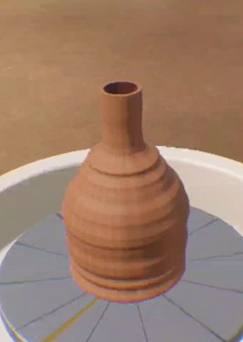

i.
the mind and the hands
The mind wears a 16-channel g.Nautilus EEG cap. The hands wear an HTC VIVE Focus Vision headset with hand tracking. They work at the same wheel in a potters’ village.
- the mind
- focusspins the wheel
- jaw clenchadds water
- blinkfires the kiln
- calmdecides the glaze


- the hands
- openthe centre
- widenfrom inside
- pullthe walls up
- shapein a potters’ village